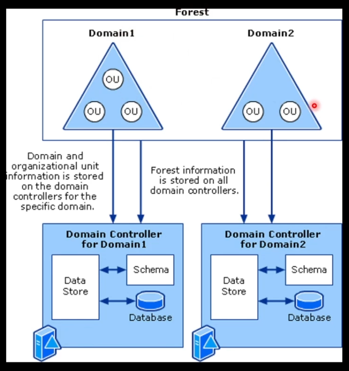
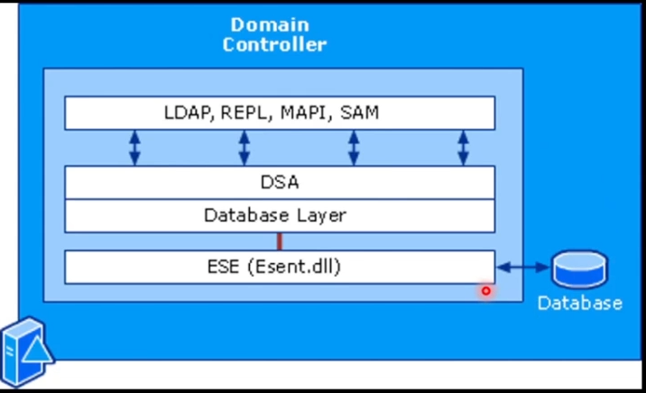

Entornos de directorio activo (ACTIVE DIRECTORY)
ACTIVE DIRECTORY
¿Qué es active directory?
Es una tecnología que se encuentra en prácticamente cualquier infraestructura para gestionar los recursos de la red como equipos, impresoras, usuarios, etc
Almacena información sobre todos los recursos de una red facilitando su organización, búsqueda y gestión por parte de los usuarios y administradores.
Utiliza un almacén de datos estructurado como base para una organización jerárquica de la información que se denomina directorio.
Suelen incluir; servidores, impresoras, cuentas de usuario, equipos en red
Además de un almacén de información también proporciona un conjunto de servicios que permiten interactuar con la información.
Active Directory Domain Services se corresponden con un conjunto de servicios que controlan diferentes operaciones de un entorno IT como:
Autenticación
Autorización
Resolución de nombres
Gestión centralizada
ESTRUCTURA DE ACTIVE DIRECTORY
Bosques, dominios y uniones organizativas son los elementos principales de la estructura lógica de Active Directory
- →
→ Un bosque o forest es el nivel más alto dentro de Active Directory. Cada bosque comparte un único directorio y representa un límite de seguridad
Los bosques pueden contener uno o varios dominios o domains
Los dominios pueden contener una o varios OUs (Organizational Units)
La información de los dominios y las OUs se almacena en un controlador de dominio para el mismo en especifico que se denomina Data Store.
La información se almacena en forma de objeto y todos los objetos están definidos por un esquema y el directorio valida los datos basándose en ese esquema
¿QUÉ ES UN DOMINIO?
Partición lógica de objetos dentro de un bosque que comparten configuraciones comunes de administración, seguridad y replicacion:
Garantiza la identidad de un usuario en la red
proporciona servicios de autenticación
Proporciona servicios de autorización
Permiten replicar la información entre diferentes Controladores de Dominio (DC) y gestionarlos como una única unidad.
Permite la creación de relaciones de confianza.
¿QUÉ ES UNA UNIDAD ORGANIZATIVA?
Es un contenedor que permite organizar otros objetos dentro de un dominio:
Permite una visualización organizada de los objetos del dominio
Agrupa entre diferentes objetos a los que aplicar políticas de grupo
Agrupa diferentes objetos de manera que se puedan delegar permisos de gestión a otros usuarios y grupos dentro del dominio.

¿CÓMO SE ALMACENA LA INFORMACIÓN?
Active directory schema
Todo lo que se almacena aquí se hace en forma de objeto. El esquema define los atributos para cada tipo de objeto
Se define un esquema por Bosque
Una copia del esquema residen en todos los controladores de dominio del bosque de manera que la definición de los objetos sea la misma
El DataStore utiliza el esquema para forzar la integridad de la información
El resultado es que todos los objetos se crean de manera uniforme, independientemente del controlador de dominio que los cree o modifique.
Active directory data store
El DataStore, normalmente referido como directorio, almacena toda la información sobre los objetos del Bosque(usuarios, grupos, equipos, etc...)
El directorio se almacena en los controladores de dominio y puede ser accedido por aplicaciones y servicios de la red
Si hay más de un controlador de dominio, cada controlador del mismo debe tener una copia del directorio con toda la información del dominio
Componentes del DataStore
- →
→
Interfaces
(LDAP, REPL, MAPI, SAM): Proporcionan una manera de comunicarse con la base de datos
DSA
: Permite obtener acceso al directorio. Mantiene el esquema, garantiza la identidad de los objetos, fuerza los tipos de datos en los atributos...
Database
Layer
: Es una API que sirve de interfaz entre las aplicaciones y el directorio, de manera que las aplicaciones no pueden interactuar directamente con la base de datos.
ESE
: Se comunica directamente con los registros individuales que se encuentran en el directorio.
Database
files
: La información del directorio se almacena en un único fichero de base de datos y de forma adicional utiliza ficheros de log para transacciones que no terminan correctamente.
